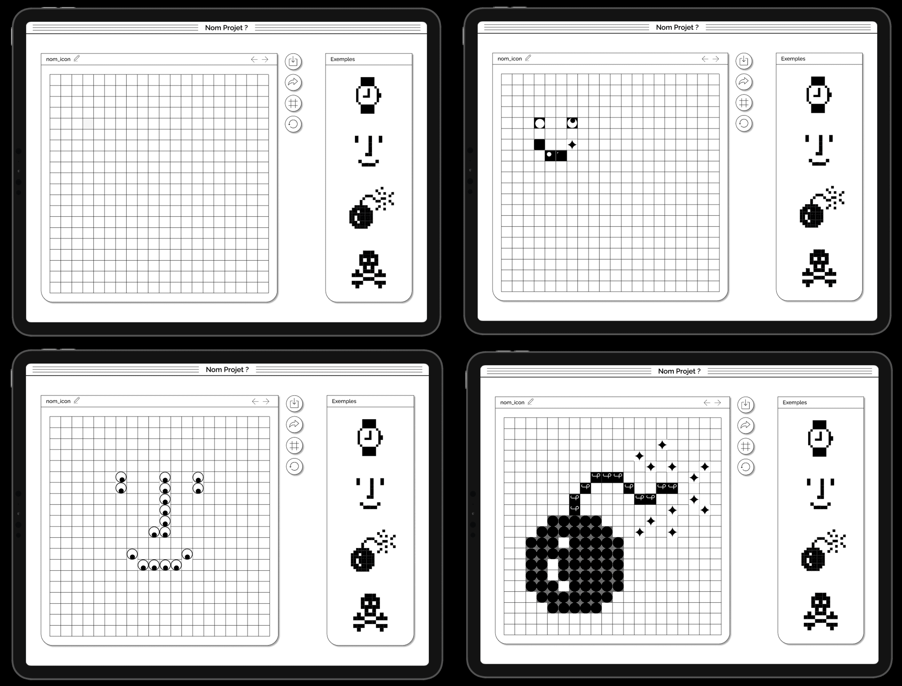

Ico Party
Interface - Médiation - Jeu
Musée de l’imprimerie et de la communication graphique, Lyon : Outil de création et de médiation pour l’exposition Icônes dédiée à Susan Kare
HTML, CSS, JS (jQuery)
Looking back at 1984
Projet dans la continuité de l’Icon Editor de Susan Kare. Sur un Ipad, les visiteurs de l’exposition ont la possibilité de créer un visuel enregistrable et partageable. Ico Party fait référence à l’année 1984, année de sortie du premier Macintosh, et au côté festif des années 80.
Au lieu de remplir une grille avec des pixels noirs, on la remplit avec des gifs animés. Ico Party est divisé en deux modes, le premier mode classique «Dessiner» qui permet de remplir les cases, et le deuxième mode «Party» qui permet de révéler les couleurs de notre dessin.
À toi de jouer !
Clique et drag ci-dessous pour dessiner :

